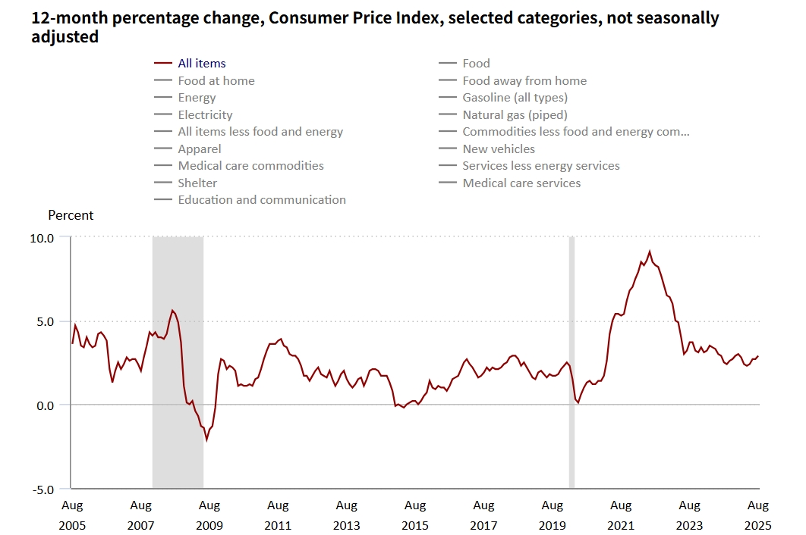
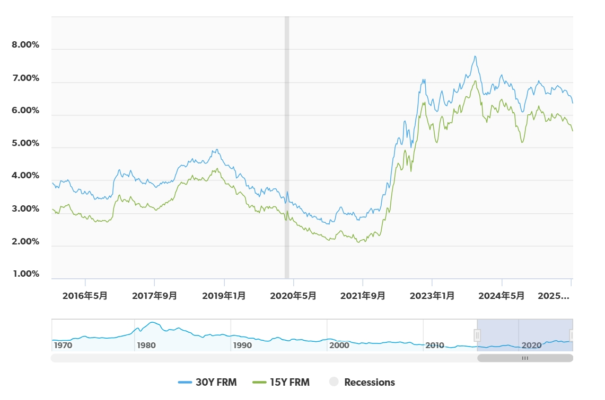
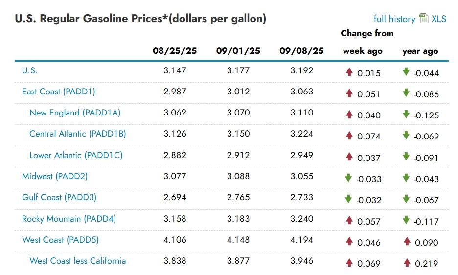
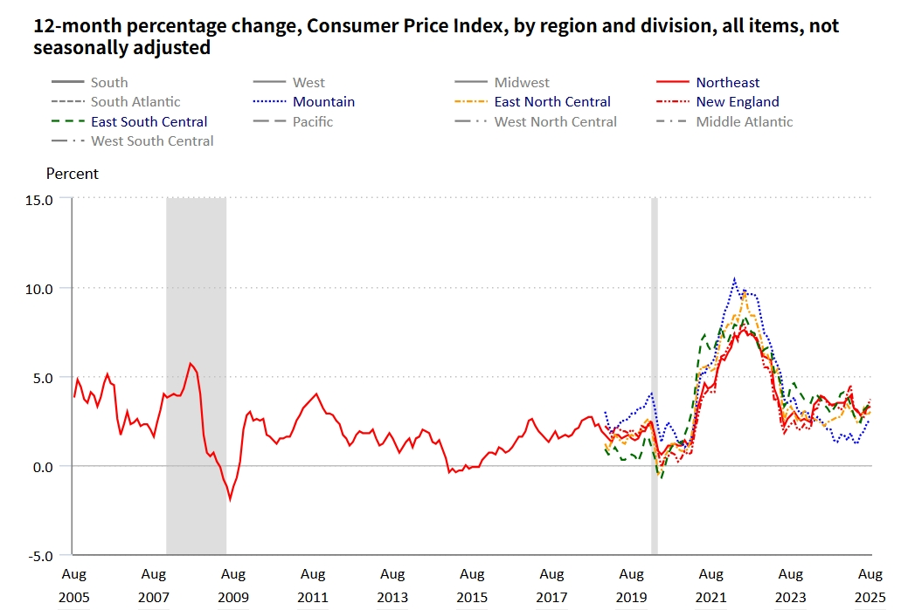
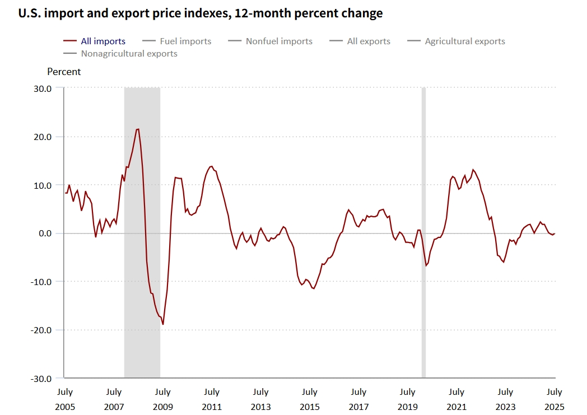

Data Sources
I have gathered data from the following sources.
- BLS — https://www.bls.gov/
- USDA — https://www.usda.gov/
- EIA — https://www.eia.gov/
- Zillow — https://www.zillow.com/
- Apartment List — https://www.apartmentlist.com/
- Freddie Mac — https://www.freddiemac.com/
- S&P Global — https://www.spglobal.com/
- NOAA — https://www.noaa.gov/
- FRED (St. Louis Fed) — https://fred.stlouisfed.org/
- BEA — https://www.bea.gov/
- U.S. Census Bureau — https://www.census.gov/
- Federal Reserve Bank of New York — https://www.newyorkfed.org/
- University of Michigan ISR — https://isr.umich.edu/
- FAO — https://www.fao.org/
- Board of Governors of the Federal Reserve System — https://www.federalreserve.gov/
- U.S. Department of the Treasury — https://home.treasury.gov/
- U.S. Congress — https://www.congress.gov/
- Federal Reserve Bank of Philadelphia (SPF) — https://www.philadelphiafed.org/
- Drewry (Freight Index) — https://www.drewry.co.uk/
- Freightos Baltic Index (FBX) — https://fbx.freightos.com/

1) Food Costs (at home vs away from home)
What to study: Size/timing of pass-through; category heterogeneity; energy & wage channels.
Sources:
- BLS CPI: Food at home, Food away from home (monthly)
Official micro-category CPI series to quantify level, trend, and seasonality of food price inflation. - USDA ERS: Food Price Outlook (monthly narrative & tables)
Contextual forecasts and explanations of drivers behind food price movements. - EIA retail fuel & energy prices (weekly/monthly)
Energy input costs that affect food production, transport, and restaurant operations. - BLS CES: industry hourly earnings (monthly)
Wage pressure in grocery/restaurant sectors to study cost pass-through.

2) Shelter Costs (rent, OER, market rents)
What to study: CPI shelter’s stickiness; market rent → CPI lags; mortgage rate environment.
Sources:
- BLS CPI: Shelter, Rent of primary residence, Owners’ equivalent rent
Core measures used in headline/core CPI; anchor for official shelter inflation. - Zillow/Apartment List Rent Index (monthly) | Apartment List
High-frequency market rents to gauge leads/lags relative to CPI shelter. - Freddie Mac PMMS mortgage rates (weekly)
Rate environment shaping housing demand and landlord financing costs. - S&P/Case-Shiller Home Price (monthly)
Asset-price backdrop informing housing tightness and rent dynamics.

3) Utilities & Home Energy (electricity, gas, water/sewer/trash)
What to study: Seasonal structure; energy shocks; weather load (HDD/CDD).
Sources:
- BLS CPI: Electricity, Utility (piped) gas service, Water/sewer/trash
Consumer price outcomes for utility categories. - EIA: retail electricity & natural gas prices/consumption
Supply-side prices/usage to connect wholesale shocks to retail bills. - NOAA: HDD/CDD and temperature time series
Weather load metrics to explain seasonal and shock-driven demand.

4) Transportation & Fuel (gasoline, transit, auto services)
What to study: Oil → gasoline pass-through; asymmetry (rocket-feather); service costs.
Sources:
- BLS CPI: Gasoline, Transportation services (e.g., insurance, maintenance)
End-user prices for fuel and transport-related services. - EIA: WTI/Brent, retail gasoline (weekly)
Upstream crude and retail fuel to measure pass-through and timing. - BLS PPI for upstream costs
Producer-level cost pressures feeding into consumer services.
5) Household Services (childcare, health out-of-pocket, education, internet/phone)
What to study: Price stickiness; trend vs cyclical; income sensitivity.
Sources:
- BLS CPI detailed services (monthly)
Granular service categories to assess persistence of core inflation. - FRED health/education price indexes
Curated time series (healthcare, tuition, telecom) for long-run context.
6) Regional & Demographic Heterogeneity
What to study: Metro/regional CPI; urban vs non-urban; distributional burden.
Sources:
- BLS regional CPI & selected metro indexes
Official regional inflation measures to compare geography. - BEA regional price parity (annual with trend context)
Relative price levels across states/MSAs to complement CPI growth rates. - CPS micro indicators (for demographic overlays)
Household characteristics enabling distributional analysis.

7) Expectations & Sentiment
What to study: Do inflation expectations predict category moves?
Sources:
- NY Fed Survey of Consumer Expectations (monthly)
Household inflation expectations and uncertainty. - University of Michigan Surveys of Consumers
Sentiment and expected price changes for near-term demand signals. - Market-based inflation compensation (breakevens via FRED)
Investor-implied inflation expectations from TIPS markets.
8) Supply Chains & Commodities
What to study: Import prices, shipping costs, ag/industrial commodities → retail.
Sources:
- BLS Import/Export Price Indexes
Border prices to assess external cost pressures and pass-through. - FAO Food Price Index
Global agricultural price benchmark for U.S. food categories. - Freight indices (e.g., Drewry/FBX—if accessible)
Shipping cost gauge for supply-chain tightness/bottlenecks.

9) Policy Episodes & Regime Shifts (e.g., COVID-19, tightening cycles)
What to study: Before/after analyses, breaks, and time-varying pass-through.
Sources:
- Federal Reserve monetary policy timeline
Dates/cycles for policy shocks and guidance pivots. - Fiscal policy events (Treasury/Congressional sources)
Stimulus, tax, and transfer programs shaping demand and incomes. - CPI category histories (BLS)
Baseline to identify structural breaks and regime changes.
10) Forecasts & Scenarios (12–24 months)
What to study: Conditional paths: if core inflation/energy follows a path, where do costs go?
Sources:
- Consensus forecasts (e.g., Survey of Professional Forecasters)
External benchmarks to anchor scenario ranges. - EIA Short-Term Energy Outlook
Energy price paths to condition fuel/utility scenarios. - Internal model outputs (produced later)
Project-specific forecasts for comparison and stress tests.
11) Budget Burden & Distribution (who bears the pain)
What to study: Expenditure shares and effective inflation by group.
Sources:
- BLS Consumer Expenditure Survey (annual/quarterly detail)
Household spending weights to compute effective inflation by group. - CPI weights and category shares
Relative importance tables for constructing subgroup baskets.
12) Nowcasting & High-Frequency Signals
What to study: Weekly/daily signals that anticipate monthly CPI subcomponents.
Sources:
- EIA weekly fuel
High-frequency gasoline signals ahead of monthly CPI release. - Card-type or scanner data if accessible
Retail micro-signals for food/household goods. - Web-scraped price indicators (methodology-dependent)
Flexible, timely proxies when official data lags.